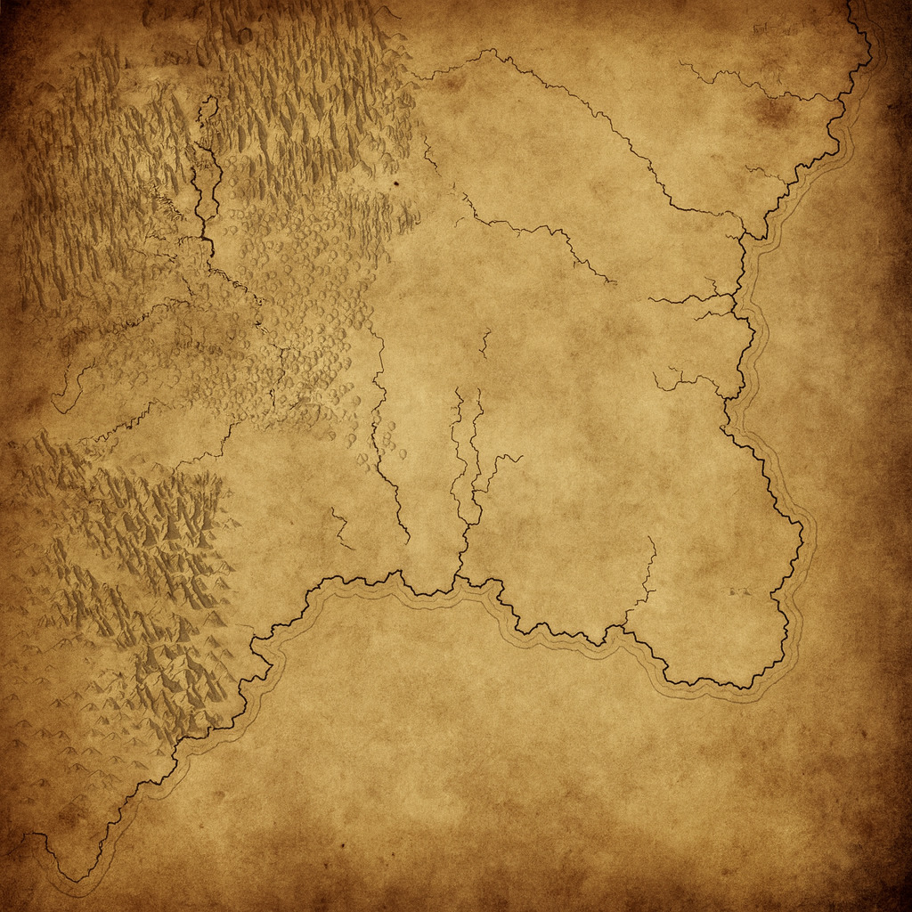

Reflections, warnings, and thoughts from the writing desk of P. S. Davis. Updated monthly.

A flash fiction tale from the start of the Zerthian War — the night a forgotten son returned to Jolda.
How science strengthens storytelling and why even dragons obey the laws of physics, at least when they feel like it.
How real knowledge anchors fantasy, where it can box you in, and how research plus imagination keep the work expansive.
Am I a pantser, a plotter, or something in between? The answer might surprise you.
How I reclaimed a Facebook group, banished the scammers, and built a haven for sci-fi and fantasy writers.
Behind the scenes of The Seeker’s Wrath and how you can join early reads for the next books.
Spotting impersonators, protecting your work, and why identity theft is not a compliment.